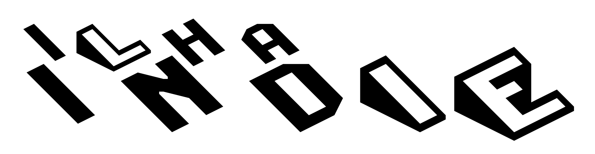

Jogo que te coloca na pele de um gato ganha gameplay e chega em 2022
Perdido, sozinho e separado da própria família, um gato precisa solucionar um mistério ancestral para escapar de uma cidade futurista esquecida e encontrar o caminho de casa.
Stray é um jogo de aventura felina em terceira pessoa que se passa nos becos detalhados iluminados por néon de uma cidade futurista, e os obscuros locais suspeitos de seu submundo. Veja o mundo pelos olhos de um gato de rua e interaja com o ambiente de maneiras divertidas.
Hollow Knight 2
close
Jogo que te coloca na pele de um gato ganha gameplay e chega em 2022
Perdido, sozinho e separado da própria família, um gato precisa solucionar um mistério ancestral para escapar de uma cidade futurista esquecida e encontrar o caminho de casa.
Stray é um jogo de aventura felina em terceira pessoa que se passa nos becos detalhados iluminados por néon de uma cidade futurista, e os obscuros locais suspeitos de seu submundo. Veja o mundo pelos olhos de um gato de rua e interaja com o ambiente de maneiras divertidas.
Kena: Bridge of Spirits
close
Uma aventura de ação e história, que combina exploração e combate em ritmo acelerado.
O game coloca os jogadores no controle de Kena, uma jovem guia de espíritos que segue os passos de seu pai na tarefa de apaziguar almas errantes que têm dificuldades em fazer a travessia para o outro mundo.
Como uma forma de melhorar suas habilidades, Kena vai parar em um vilarejo remoto cuja população desapareceu misteriosamente. Para piorar a situação, uma energia negativa e corrupta infestou o lugar. Com a ajuda de pequenas criaturinhas guardiãs chamadas Rot, Kena deve dar seu melhor para auxiliar os espíritos remanescentes e investigar a fonte dos problemas do vilarejo.

Conheça STRAY
O jogo lançado pelo estúdio BlueTwelve mistura exploração e solução de quebra-cabeças com sequências de ação rápidas.
Hollow Knight 2?
Hollow Knight: Silksong é uma sequência de Hollow Knight estrelado pela personagem Hornet, e tem sido aguardado ansiosamente pelos fãs
Kena: Bridge of Spirits
Desenvolvido pela Ember Lab o jogo foi o vencedor da categoria Melhor Game Indie no evento do TGA(The Game Awards) de 2021. Conheça um pouco mais sobre Kena!